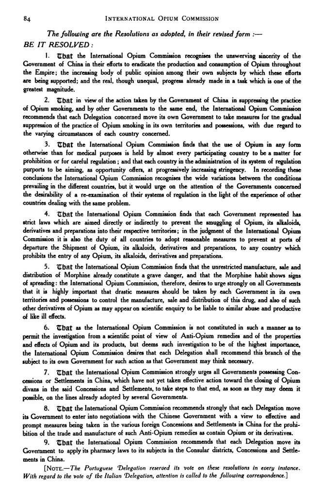
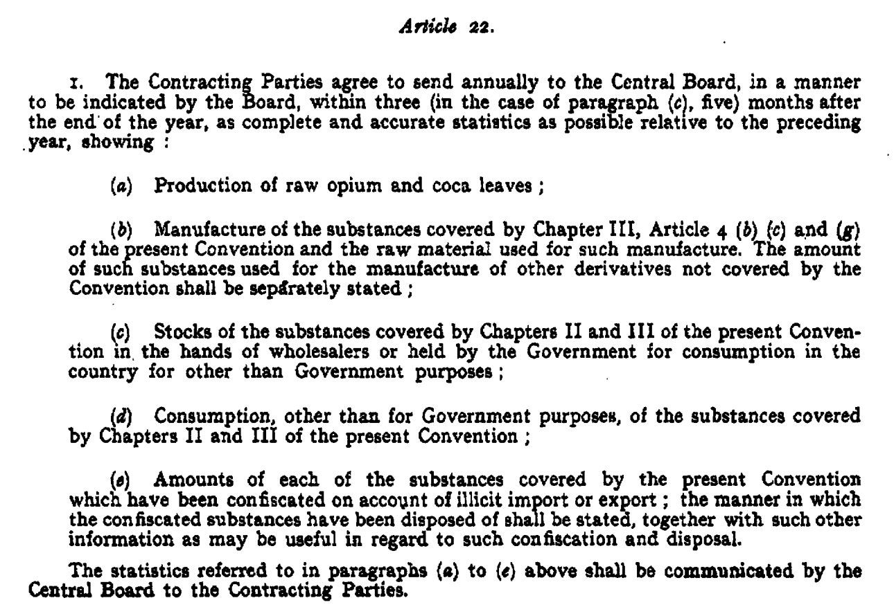

“The United States, however, is not itself an opium-producing country, and in order to make its laws fully effective, and stamp out the evil, there should be control of the amount of opium shipped to this country. To this end it will be necessary to secure international cooperation and the sympathy of opium-producing countries.”(Alvey A. Adee, The Acting Secretary of State to the diplomatic officers, 1909)
(International Opium Commission in Shanghai, 1909)
"I extend to the Commissioners to-day assembled my good wishes and conviction that their labours will be of the greatest importance toward the general suppression of the opium evil throughout the world."(Report of the International Opium Commission, 1909)
Delegates from thirteen countries gathered a global consensus on the opium evil before drafting official regulations.
"On the whole...the main object of this Conference will be to consider the question of putting a stop to the consumption of opium."(Report of the International Opium Commission, 1909)

(Report of the International Opium Commission, 1909)
The Shanghai Commission laid the precedent for future international meetings that aimed for creating drug-control reforms. The establishment of this worldwide agreement secured global collaboration in abolishing the opium evil.
"Its conclusions that the opium vice should cease and that the illicit morphine traffic must be discontinued were unanimous. But these conclusions were on their face only moral in effect. Nevertheless they cleared all doubt as to future action."(Hamilton Wright, The International Opium Conference, 1912)
The commission reframed drug control as a global ethical issue, not national sovereignty, making opium consumption internationally indefensible.
(De Opiumconferentie, 1914)
The prior commission established opium as evil, but failed to produce international regulations on opium:
"Greatly impressed by the gravity of the opium problem...as determined by the Shanghai Commission, the United States proposed an international conference to be held at the Hague, and that delegates thereto should have full powers to conventionalize the resolutions adopted at Shanghai and their necessary consequences."(Hamilton Wright, The International Opium Conference, 1912)
Control of Production
"The Contracting Powers shall enact effective laws or regulations for the control of the production and distribution of raw opium." (article 1)(League of Nations, International Opium Convention, 1912)
International Trade Regulations
"(a) To prevent the export of raw opium to countries which shall have prohibited its entry, and (b) To control the export of raw opium to countries which restrict its import." (article 3)(League of Nations, International Opium Convention, 1912)
(The Buffalo Times, Anti-Opium Protocol Signed at The Hague, 1915)
Restricting Non-medical Usage
"The Contracting Powers shall enact pharmacy laws or regulations to limit exclusively to medical and legitimate purposes the manufacture, sale, and use of norphine, cocaine, and their respective salts...They shall co-operate with one another to prevent the use of these drugs for any other purpose." (article 9)(League of Nations, International Opium Convention, 1912)
Enforcement Measures
"The Contracting Powers shall examine the possibility of enacting laws or regulations making it a penal offence to be in illegal possession of raw opinm, prepared opium, morphine, cocaine, and their respective salts." (article 20)(League of Nations, International Opium Convention, 1912)
International Cooperation
"The Contracting Powers shall commmunicate to one another, throngh the Ministry Foreign Affairs of the Netherlands." (article 21)(League of Nations, International Opium Convention, 1912)
(League of Nations, Second Opium Conference, 1925)
Although earlier conferences' failure to acknowledge opium as a global evil and enforce meaningful controls allowed the problem to expand, the 1925 Geneva Conference called for stricter international control, marking a shift toward more aggressive and centralized drug policy.
(An upgraded International Opium Commission is passed, 1925)
"...remember that the aim we have in view is to provide a really effective weapon to fight a scourage which has become increasingly dangerous to mankind.
The evil which we are here to combat has spread to all classes of society and to almost all countries. I need not say that we must attempt to cure those who have already contracted the pernicious habit of morphinomania."
(Records of the Second Opium Conference, 1925)
Enforcement Body
"A Permanent Central Board shall be appointed, within three months from the coming into force of the present Convention...In making the appointments, consideration shall be given to the importance of including on the Central Board, in equitable proportion, persons possessing a knowledge of the drug situation, both in the producing and manufacturing countries...[and] shall not hold any office which puts them in a position of direct dependence on their Governments."(League of Nations, Second Opium Conference, 1925)

(League of Nations, Second Opium Conference, 1925)
(League of Nations, Second Opium Conference, 1925)
Mandatory Reports
"The Contracting Parties agree to send in annually before December 31st, to the Permanent Central Board set up under Article 19, estimates of the quantities of each of the substances covered by the Convention to be imported into their territory for internal consumption during the following year for medical, scientific and other purposes." (article 21)(League of Nations, Second Opium Conference, 1925)